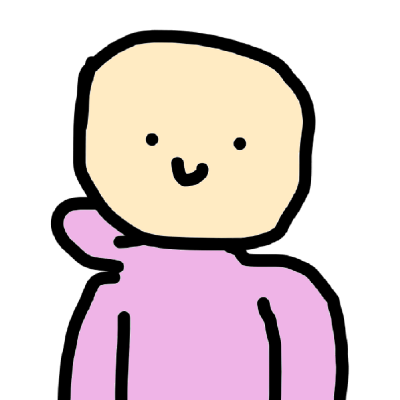

Alexander Volchek
Technical Support Enginee
Belarus:Minsk
About me
I want to get good job satisfaction, develop and acquire professional skills, gain new experience and improve my English. Material benefits: official salary and bonus, social package, learning opportunity, career growth. Strengths: optimism, persistence, love for little things. Creative, structured, logical, tactical and strategic thinking. I also have such a character trait as coming up with solutions in an extraordinary or creative way.Work experience
Republican Unitary Enterprise Information Computing Center of the Ministry of Finance Republic of Belarus
- Technical Support Enginee
System maintenance and repair of computer and printing equipment.
Equipment inventory and accounting.
Testing hard drives and memory modules.
Minor repairs, replacement of faulty PC modules.
Preparing the machine for use by the end user.
BIOS setup and flashing.
Installation of OS, drivers.
Installing software.
Cloning and creating disk images.
Data recovery.
Connecting and configuring to a domain network, Working with Active Directory.
Consulting and support, as well as elimination of functional errors in the work of the company’s software products.
Scripting development and system administration.
Education
MGPTK Electronics
Information resource management
- Software Technician
Intensive courses
- Skillbox
- Geekbrains
- Higher special education - profession: programmer School
Skills
- php
- html
- css
- mysql
- javascript
- python
- pascal
- c++
- assembler
- delphir
- visual basic
Code
- Saving wallpaper Windows Spotlight
import os
import random
import shutil
#Copy all files and insert new catalog
scr = r'%LOCALAPPDATA%\Packages\Microsoft.Windows.ContentDeliveryManager_cw5n1h2txyewy\LocalState\Assets'
dst = r'D:\winScreen'
#ignore check information
shutil.copytree(scr,dst,dirs_exist_ok=True)
#rename and type .jpg
os.chdir(r'D:\winScreen')
z = os.listdir('D:\winScreen')
for x in z:
os.rename(x, str(random.random() * 100) + '.jpg')
#sort for size and delete another files
from PIL import Image
for x in os.listdir('D:\winScreen'):
if(Image.open(x).size)!=(1920,1080):
os.remove(x)
Language skills
English at level A2. Basic language practice: reading technical documentation and searching for technical information in any available form.